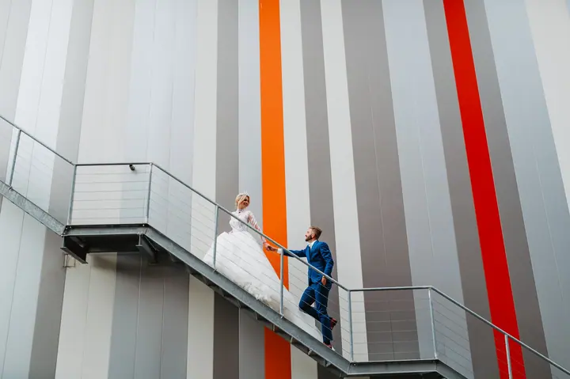
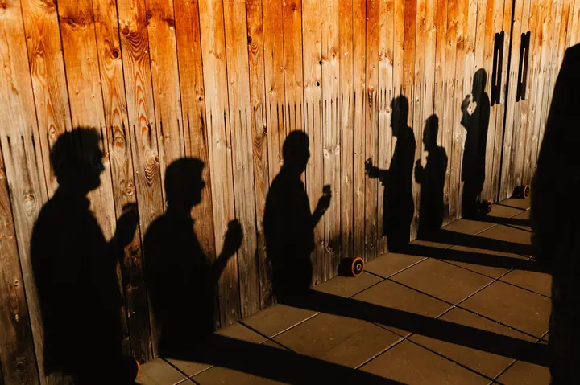
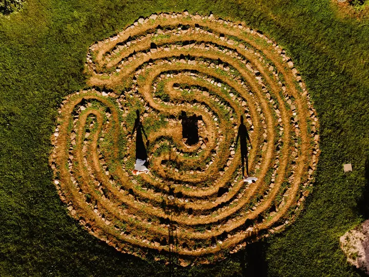

jedna
Svatby
Svatební fotografie je to, čemu se věnuji nejvíc. Zkušeně vás provedu celým dnem a vaše přání zakomponuji do toho, jak budeme fotit.


Jmenuji se Honza Andrašší a pod značkou Jan Andrassi Photography fotím hlavně svatby, páry a rodiny. Nejdřív si vyslechnu, jak si svůj den představujete, a pak vás celým procesem v klidu provedu.
Více o mně
Co fotím
jedna
Svatební fotografie je to, čemu se věnuji nejvíc. Zkušeně vás provedu celým dnem a vaše přání zakomponuji do toho, jak budeme fotit.
dvě
Společné focení ve dvou, venku a ve světle, které se k vám hodí. Prostor pro nápady, na které o svatbě nezbývá čas.
tři
Kromě svateb fotím i rodiny. Nejdřív si vyslechnu, jak si focení představujete, a podle toho ho naplánujeme.
Vaše přání vezmu za své


Za objektivem
Ahoj, jsem Honza. Vedu značku Jan Andrassi Photography a fotografie se věnuji profesionálně, především té svatební a rodinné.
Na každé spolupráci mi záleží od prvního setkání. Rád si poslechnu vaše přání a nápady a pak je zakomponuji do toho, jak budeme fotit. Nemusíte nic znát dopředu, celým procesem vás provedu.
Svatbu fotím tak, aby na fotkách byla vidět atmosféra celého dne: obřad, chvilky ve dvou, kamarádi i večerní zábava.
Jan
Napíšete nebo zavoláte a domluvíme si schůzku. Řeknete mi, jak si svůj den nebo focení představujete.
Z toho, co mi řeknete, sestavím plán focení. Probereme místa, čas a momenty, na kterých vám nejvíc záleží.
Jsem s vámi a vedu vás, kdy je potřeba. Zbytek času se můžete věnovat sobě a svým blízkým.
Fotografie pečlivě vyberu a upravím a pošlu vám je k prohlížení a sdílení.
Portfolio
Fotografie jsou ilustrační
Otázky
Svatby fotím nejčastěji, ale rád nafotím i páry a rodiny. Napište mi, co máte v plánu.
Nemusíte. Vyslechnu vaše přání a celým procesem vás provedu, takže nic nemusíte vymýšlet sami.
Napište mi, kde se berete nebo kde byste chtěli fotit, a domluvíme se na podrobnostech.
Cena záleží na rozsahu a délce focení. Ozvěte se mi a připravím vám nabídku přímo pro váš den.

Napište pár vět o tom, co si představujete. · +420 608 180 613